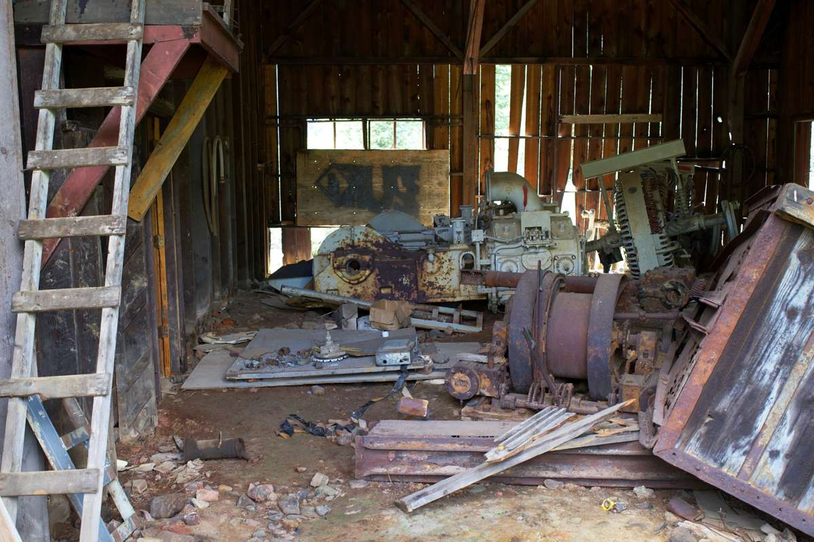

An outbuilding cleanout is a contents job, not a demolition job. The building stays standing. What comes out is usually furniture that got moved out of the house years ago, shelving and bins somebody built in place, leftover lumber and fencing, and boxes nobody has opened since the last move. The one exception is the fuel and chemical shelf, which goes to the city instead.

This is the acreage version of a job we already cover in two other places. What is actually inside a shed is the backyard-sized version of it, and cleaning out a workshop covers a working shop with tools in it. This post is about the bigger building on the back of a property that quietly became storage.
What is actually inside an outbuilding
From the door it reads as one problem. It is really four, and splitting it into four is what makes the day go quickly.
The first is furniture. Almost every barn and shop on an acreage property has a layer of it: a sofa that came out of the living room during a remodel, a dining set that nobody wanted after a move, mattresses, a dresser with a stuck drawer, kitchen chairs stacked in a corner. It got carried out there because the building had room, and room is exactly the problem.
The second is material. Fence pickets, posts, rolled wire, scrap lumber, sheet metal, pipe, a pallet stack, roofing left over from a job that finished years ago.
The third is bins and built-ins. Feed bins, shelving somebody framed into a wall, a workbench that was screwed to a stud, cabinets pulled out of a kitchen and reused for storage. Those come apart on site rather than coming out whole.
The fourth is boxes, and it is the group that surprises people. Moving boxes that went straight from a truck into the building and never got opened. Holiday bins. Paperwork. Those take the longest per foot of floor, because somebody has to at least glance in them first.
The furniture layer
This is normally the biggest single share of the load, and it is the easiest part to get moving.
Sort it once into three piles: going to family, going to donation, going out. Anything still usable is worth a call to a donation partner before it leaves. Habitat for Humanity ReStores take donated goods including furniture and building materials at many locations, and what any one ReStore accepts varies, so call before you load a truck.
Understand what a few years in an unconditioned building does, though. Upholstery that has been through several North Texas summers usually has mildew, mice, or both, and no donation center will take it. That is not a judgment on the piece. It is just what heat and humidity do to fabric out there.
Everything past that is ordinary furniture removal. If the property is up around Prosper, the local detail on how that runs is on our page for getting old furniture hauled off a Prosper property.
Walk the building once with a flashlight before the crew comes. Outbuildings are where people put the things they could not decide about, and the deciding is the slow part. Once a truck is in the drive, the decision has already been made.
The fencing, lumber and metal pile
Every acreage property has one, and it is usually against a wall or just outside the door.
Clean untreated lumber, fence pickets and posts, wire, pipe and sheet metal all come out on a normal job. Wood goes into the building materials recycling stream where that is available, and the EPA's guidance on sustainable management of building materials explains where those materials sit.
Metal is the part worth separating, because it does not need to go to a landfill at all. Rolled wire, panels, gates, sheet metal, old bed frames, appliance shells. That goes to a recycler.
Treated lumber has one hard rule, which is that it never goes on a burn pile. We wrote about that in more detail in the post on fence and deck teardown debris.
If there is a structure you actually want taken down rather than emptied, say so up front. That is a different conversation with a different crew plan, and it is not something to sort out on the day.
The shelf that is not ours to take
Every outbuilding has one, usually near the door at eye level, and it is the one part of the job we leave behind on purpose.
Gasoline in cans, diesel, motor and chain oil, antifreeze, solvents, paint, stain, thinner, pesticides, herbicides, pool chemicals, aerosols, and anything with a warning label and a missing lid. That is household hazardous waste and it goes to a city collection program, not on a truck. TCEQ keeps a plain page on household hazardous waste and what belongs in that stream, and the town of Prosper lists its own trash and recycling services for residents. Every city up here runs something comparable.
Unlabeled containers are their own category. If nobody can say what is in a jug, it does not get poured out and it does not go in a bag. It goes to the collection site as an unknown.
None of that stops the rest of the job. We work around that shelf and take everything else.
How the job runs
Send photos, and include the door and the path from the drive. On an acreage property the route matters as much as the room. A crew needs to know whether a truck can get close to the building or whether every piece is getting carried a hundred feet to the gate.
Tell us about the loft and the second floor if there is one. A hay loft or a storage mezzanine changes how the crew staffs the job, and finding out on the morning of is how a half day turns into two.
A crew looks at what is going and gives you a firm number before anything is lifted. The quote is the bill, and disposal is included. Usable furniture and materials go to local donation partners where they will take them, metal goes to a recycler, and the rest goes out as waste. These are our own crews, not gig labor, which is why we are comfortable working a back building on a property nobody has walked in a while.
Call before noon and same afternoon is typical across the northern suburbs, though a full outbuilding is usually worth scheduling rather than squeezing in. When the keep pile is settled, tell us what needs to come out, or read how a normal job runs on a property out in Prosper.
Frequently asked questions
Do you take the building down too, or only what is inside it?
Contents are the standard job. Structures are a separate conversation and we would want to look at it first, so say up front which one you are asking about.
What about the furniture that has been out there for years?
It comes out either way. Anything still usable goes to a donation partner. Upholstery that has been through a few summers in an unconditioned building usually cannot be donated, and that is normal rather than a problem with the piece.
Can you take fencing wire and metal panels?
Yes. Wire, panels, gates, pipe and sheet metal are a normal part of this work, and metal goes to a recycler rather than a landfill.
What happens with the fuel cans and the chemical shelf?
Those stay. They go to your city's household chemical collection program, and we will point you at the right page for your address. It is the one part of an outbuilding we leave behind on purpose.
Is there anything I need to do before you arrive?
Pull the keep pile out and put it somewhere obvious, and make sure the crew can reach the building. Those two things save more time than anything else on this kind of job.
An outbuilding is where a property stores the decisions nobody made. Emptying it is usually less work than the door suggests. The rest of what we haul is on the services page.